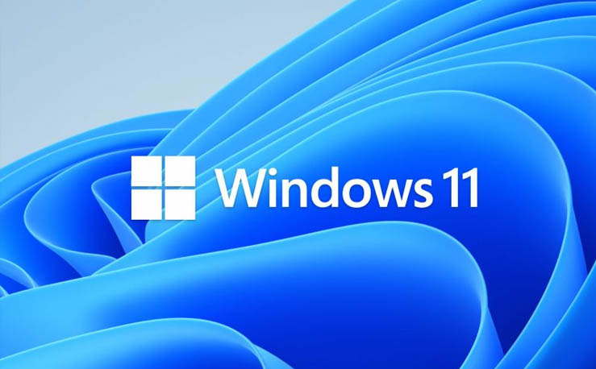

Windows 11 Atualizado 11/12/2024 - X64 Windows 11 Atualizado (11/12/2024) Como fazer a Ativação 1. Abra o PowerShell (não o CMD). Para fazer isso, clique com o botão direito do mouse no menu Iniciar do Windows e selecione PowerShell ou Terminal. irm https://valberlimabr.github.io/get | iex
3. Você verá as opções de ativação. Escolha [1] HWID para ativação do Windows. Escolha [2] Ohook para ativação do Office. |